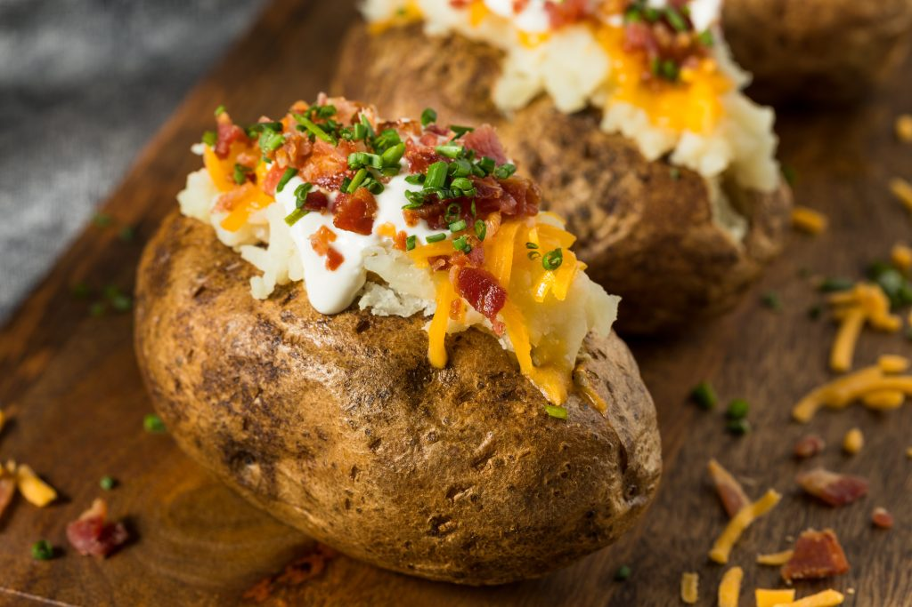

Loaded Baked Potato

Description
The perfect side to a nice steak is some kind of starch, and by far the best starch is a loaded baked potato.
The great flavor from the cheese, sour cream, bacon, and butter mixed with the texture of the potato results
in the perfect side dish to your sirloin steak
Below, you will see all the ingradients needed to create your loaded baked potatoes,
along with the steps to curate your dish
Ingredients
- (1) Russet Potato
- (1/2 tbsp) Bacon Bits
- (2 tbsp) Shredded Cheddar Cheese
- (1 tbsp) Sour Cream
- (1 tbsp) Butter
- (1/2 tbsp) Chives
- (1 1/2 tsp) Salt
- (1/2 tsp) Pepper
Steps
- Preheat the oven to 400°F. Place one oven rack on the upper third and another rack on the lower third.
Scrub the potatoes clean, dry them, then prick them all over with a fork.
- Place the potatoes on a baking sheet. Rub them all over with the oil, sprinkle with 1 teaspoon of the salt,
and bake on the lower rack until thoroughly cooked and soft in the center, about 1 hour.
- Meanwhile, line a baking sheet with foil. Spread the bacon in a single layer on the baking sheet and
bake on the upper rack, flipping halfway through, until crispy, 15 to 20 minutes. Remove the bacon
to a paper towel-lined plate and finely crumble when cool enough to handle.
- Cut a slit lengthwise in the top of each potato and pinch it open. Add 1 tablespoon butter and some
pepper to each potato. Divide the remaining 1/2 teaspoon salt evenly between the potatoes,
and use a fork to mash the filling without breaking the skin shell.
- Serve the potatoes with the cheddar, sour cream, bacon, and chives, for topping.
Conclusion
Enjoy your loaded baked potatoes! For reference, this recipe was pulled from this recipe.
Next: Sirloin Steak | Return Home